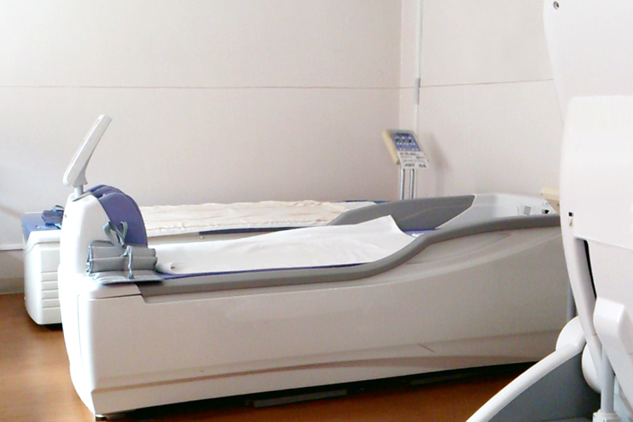

患者さまが安心して相談できる
質の高い治療を
整形外科・リハビリテーション科
当院の特徴Features
01.
整形外科専門医による丁寧な診察
首・腰・関節の痛みなど、患者さま一人ひとりの症状に寄り添い、
的確な診断とわかりやすい説明を心がけています。

02.
充実したリハビリテーション設備
専任のリハビリスタッフ（理学療法士）が在籍。
患者さまの運動機能回復と生活の質向上をトータルサポートします。
03.
通いやすいバリアフリー環境
院内は車椅子やベビーカーでも安心してご来院いただけるよう、
段差のない完全バリアフリー設計となっています。
診療案内Medical
当院では、身体の痛みや違和感に関する幅広い診療を行っております。
整形外科
肩こり、腰痛、膝の痛み、骨折、打撲、捻挫などの一般整形外科診療。
リハビリテーション科
理学療法士による個別の運動療法・物理療法（温熱・牽引など）。
スポーツ整形外科
スポーツによるケガ（肉離れ・靭帯損傷など）の治療と予防指導。
骨粗しょう症外来
骨密度測定装置を用いた早期発見と予防・薬物療法。
診療時間Schedule
| 診療時間 | 月 | 火 | 水 | 木 | 金 | 土 | 日・祝 |
|---|---|---|---|---|---|---|---|
| 09:00 - 12:30 | ○ | ○ | ○ | ○ | ○ | △ | － |
| 15:00 - 18:30 | ○ | ○ | － | ○ | ○ | － | － |
※ 土曜日の診療は 09:00 - 13:00 となります。
※ 休診日：水曜午後、土曜午後、日曜日、祝日
アクセスAccess
明日未来整形外科クリニック
〒000-0000 東京都〇〇区〇〇1-2-3 〇〇ビル 2F
TEL: 03-1234-5678
- 電車でお越しの方：〇〇線「〇〇駅」北口より徒歩3分
- バスでお越しの方：〇〇バス「〇〇停留所」下車すぐ
- お車でお越しの方：提携駐車場あり（2時間無料）